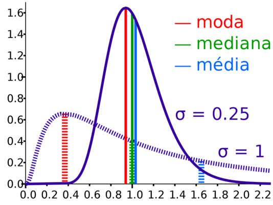
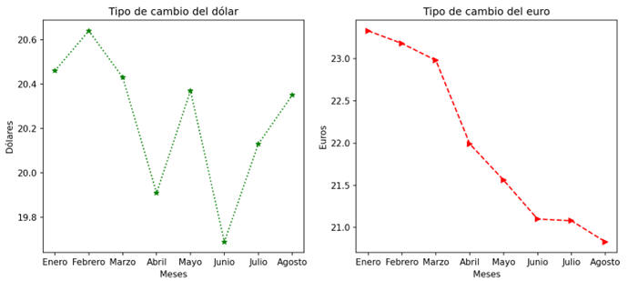
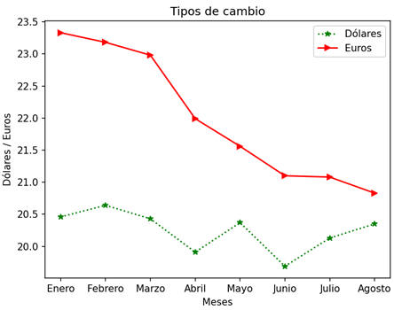
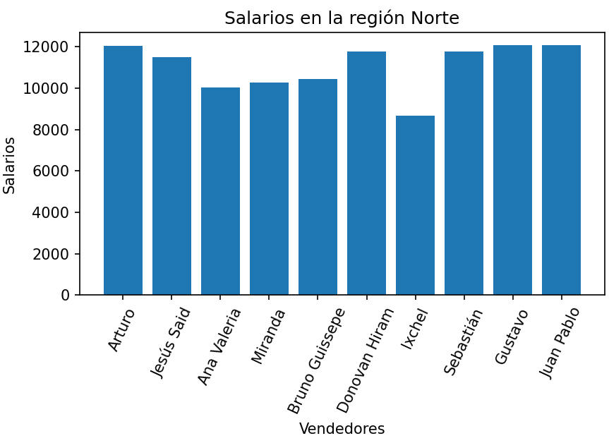
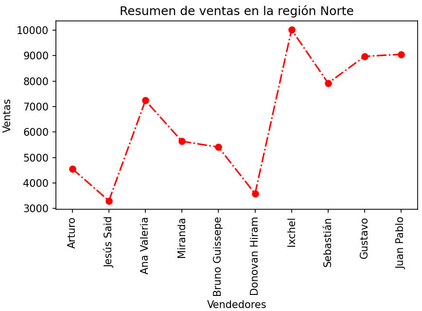

.
Objetivo:
- El objetivo que se persigue en esta situación
problema, es que el alumno aplique los conceptos, herramientas de
búsqueda y análisis de datos para resolver una problemática de una
empresa planteada por el mismo estudiante, a través de la
programación con Python.

Descripción:
- Investigar y solicitar a una empresa en la que
te autoricen a utilizar sus datos. Deberás enfocarte en una
problemática en general (puede ser una empresa familiar o una
investigación de bases de datos reales).
- Generar una tabla con los datos necesarios en
Excel para extraer la información relevante de la problemática. La
tabla deberá venir de una fuente confiable y actualizada. La tabla
deberá constituirse con:
- Registros (renglones), al menos 30 y máximo
50.
- Columnas, 10 máximo, 5 cualitativas (texto) y
5 cuantitativas (numéricas).
- Generar al menos 6 preguntas que detonen
tu análisis, recuerda que cada integrante deberá generar al menos
dos preguntas. Por ejemplo, si tus datos son de ventas y tienes
esta información, podrían ser:
- ¿Cuáles son las sucursales que más
venden?
- ¿Cuáles son los productos más
vendidos?
- ¿Quiénes son mis mejores clientes?
- ¿Cuál de mis proveedores tiene el
mejor precio?
- Con base a las preguntas que generaste,
extraer la información suficiente y necesaria para dar respuesta a
tus preguntas.
- Aplicar la estadística descriptiva
utilizando las herramientas de Python, para “ver la información”
que no puedes ver a simple vista. Muestra al menos 5 indicadores
relevantes de los datos analizados.
- Representa la solución de tus preguntas
detonadoras a través de gráficos, se creativo.
- Generar tu propuesta de acciones que
aporten valor a las estrategias que deberá tomar el negocio, esto
de acuerdo a la problemática planteada.
- Especificar las acciones del código de
Ética que aplicarás en la solución planteada.

Modalidad:
- Individual y colaborativa.

Instrucciones del programa:
Escribe tu nombre y matrícula al inicio de tu
programa: print("Nombre
Matrícula")
Crea las siguientes funciones:
valida_clave (lista_claves)
que recibe como parámetro de entrada una lista con las
claves de acceso permitidas para acceder a tu programa.
La función deberá pedir al usuario su clave de
acceso. Mediante un ciclo
while, mientras la clave no se
encuentre en la lista de claves permitidas, que imprima "Intenta
de nuevo, introduce tu clave de acceso" y
pida de nuevo la clave. Al final de la función imprime "¡¡ Bienvenido
!!".
Ejemplo:
|
valida_clave
(["ornitorrinco", "laurayluis",
"clavesecreta"])
Dame tu
clave: secreto2023
Intenta de nuevo, introduce tu clave de acceso
Dame tu
clave: imposible
Intenta de nuevo, introduce tu clave de acceso
Dame tu clave:
ornitorrinco
¡¡
Bienvenido
!!
|
- Seleccione cada integrante del equipo
2 preguntas detonadoras, extraiga del archivo de
Excel información suficiente y necesaria para dar respuesta a estas
preguntas. Aplicar la estadística descriptiva
utilizando las herramientas de Python, para “ver la información”
que no puedes ver a simple vista.
-
La función
estadística_descriptiva (informe)
que reciba como parámetro de entrada el
tablero o dataframe. Cada integrante del equipo deberá analizar al
mínimo 5 descriptores estadísticos de información relacionada con
sus preguntas detonadoras.

- Representa la solución de tus preguntas
detonadoras a través de gráficos, se creativo.
-
La función
grafica1 (tablero)
que reciba como parámetro de entrada el tablero o dataframe.
La función deberá generar una gráfica simple de barras
o líneas respecto a la información de una de sus
preguntas detonadoras.
Guarda la información de las columnas que requieras para crear tu
gráfica en dos listas, tú eliges qué criterio mostrarás en tu
gráfica. Como requisitos
mínimos, la gráfica deberá contener un título y las etiquetas
adecuadas.
-
La función
grafica2 (tablero)
que reciba como parámetro de entrada el tablero o dataframe.
-
La función deberá
generar una gráfica con dos cuadrantes (dos gráficas en un
tablero)
respecto a la información de tus preguntas detonadoras. Guarda
la información de las columnas que requieras para crear tu
gráfica en dos listas, tú eliges qué criterio mostrarás en tu
gráfica. Como requisitos mínimos, la gráfica deberá contener un
título y las etiquetas adecuadas.

-
La
función deberá generar una gráfica con un elemento en el eje de las x's
y dos elementos en el eje de las y's respecto a la información de tus
preguntas detonadoras. Guarda la información de las columnas que
requieras para crear tu gráfica en dos listas, tú eliges qué criterio
mostrarás en tu gráfica. Como requisitos mínimos, la gráfica deberá
contener un título, las leyendas y las etiquetas adecuadas.

-
La
función deberá generar una gráfica de barras o
líneas de subtablas, usando el método grupby,
respecto a la información de tus preguntas detonadoras. Guarda
la información de las columnas que requieras para crear tu gráfica en
dos listas, tú eliges qué criterio mostrarás en tu gráfica. Como
requisitos mínimos, la gráfica deberá contener un título y las
etiquetas adecuadas.


-
La función menu ()
que despliegue el menú de opciones en la pantalla:
1. Estadísitica descriptiva
2. Gráfica 1
3. Gráfica 2
4. Salir
En la función
main ():
- Carga la información del archivo de
Excel en un Dataframe.
- Crea una lista con las claves
permitidas y llama a la función valida_clave.
- Utilice la función menu
para desplegar el menú correspondiente y de acuerdo a
la opción seleccionada por el usuario le dé la oportunidad de
ejecutar cualquiera de las funciones que han sido construidas.
Utiliza el estatuto de control if anidado. Recuerda que la
captura de datos debe ser realizada en la sección del main.
Debes utilizar el ciclo while para que se cicle el programa
hasta que el usuario introduzca la opción de salir. Valida
opciones inválidas.
En el script principal
manda llamar a la función main.

En comentarios, coloca antes de cada función una pequeña
descripción de lo que hace cada función. El programa deberá
contener los comentarios necesarios para una mejor comprensión del
código.
Guarda tu archivo como
entrega2_matrícula.py
Instrucciones de la documentación
individual:
.
En un documento de Word integra lo
siguiente:
-
Portada individual
-
Las dos preguntas detonadoras individuales.
-
Impresión de pantalla de los resultados de la función de
estadistica_descriptiva.
-
Impresión de pantalla de sus gráficas.
-
Conclusión: Estrategia de negocio (mínimo una cuartilla)
-
Analizar y explicar los resultados obtenidos
con las gráficas y con las funciones de estadística descriptiva
(Qué les dicen las estadísticas para la estrategia del
negocio). Con la ayuda de la estadística y las gráficas de
Python, encontrarás conclusiones de los datos que se analizaron
dando respuesta a las preguntas detonadoras.
-
Genera tu propuesta de acciones que aporten
valor a las estrategias que deberá tomar el negocio, esto de
acuerdo a la problemática planteada. Interpretarás los
resultados del análisis y listarás las conclusiones.
Instrucciones de la documentación en
equipo:
.
En un documento de Word integra lo
siguiente:
-
Portada en equipo
-
Describir de forma general el giro de la empresa.
-
Descripción de los campos de la tabla, como la obtuvieron y porque
seleccionaron esa base de datos.
-
Acciones del código de Ética. Especificar las acciones del código
de Ética que aplicarás en la solución planteada.

Especificaciones
de entrega:
|